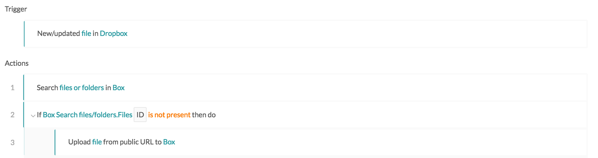
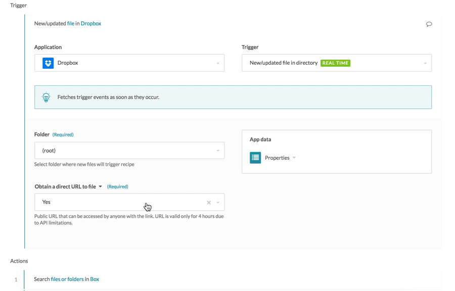
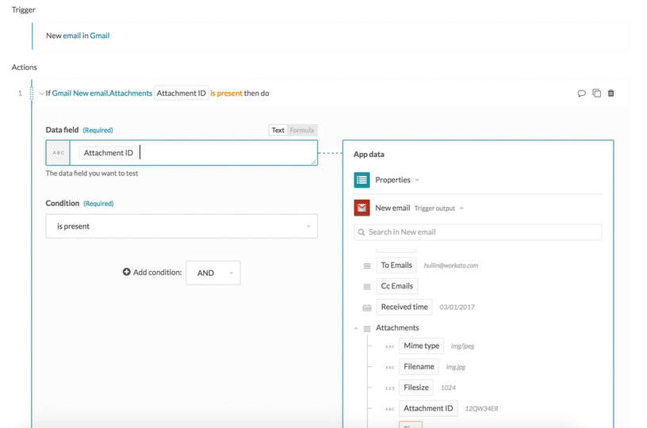
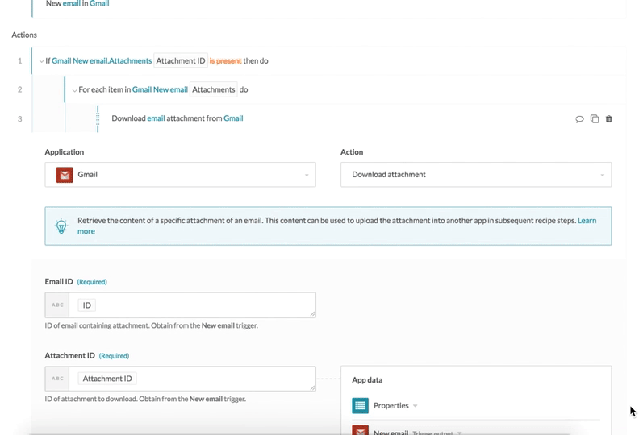
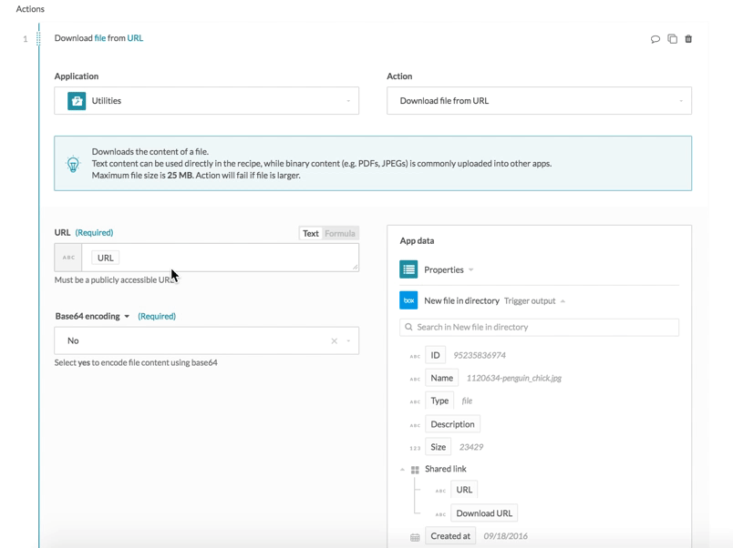

Working with files and attachments in Workato
Files and attachments are a key aspect of many integrations. e.g. Uploading CSV files to Redshift, moving attachments from Salesforce to Zendesk, etc. Workato supports working with file and attachments of different formats (i.e. JSON, XML, etc.) across different access/transport mechanism (e.g. FTP, file system, APIs, S3, etc.)
Text files
Text files refers to files which can be opened with any text editor and is generally human-readable. Workato can act as the intermediary to move files from one app to another, as well as extract data from text files and parse it for use in Workato. For example, a recipe can retrieve CSV file content, parse it and make it available within Workato so it can be transformed and moved to another app.
Some examples of text files commonly worked with:
- Tabular data: CSV
- Documents: txt, rtf
- Web standards: html, XML, JSON
Binary files
Binary files refer to any file which is not human readable. Unlike text files where Workato parses the content to understand the structure of data, with binary files, Workato does not interpret the content, e.g. Workato cannot read and interpret an image file, but it can upload the entire file into Salesforce as an attachment.
Some examples of binary files commonly used:
- Images: jpg, png, gif, bmp, psd
- Documents: pdf, doc, docx, ppt, xls, odt
Moving text/binary files as-is between apps
When moving files across apps without interpreting the content, it works the same for text or binary files. Workato has 2 approaches:
- By passing on a URL to the destination app, so this data does not have to move through Workato. This URL will have to be publicly accessible and can disappear afer the job has completed.
- By uploading content from app to Workato, and then downloading to the other app. This is not a great approach for working with very large files, as all the data has to move into the recipe, across every recipe step and then to the destination app.
Moving text/binary files via public URL
This is typically a 2-step process:
Get the public URL of the file to move. Generally found in the trigger or action output. e.g. New file trigger output contains a URL.
Pass in this public URL to the destination app. Generally an Upload file via URL action.
Example
Let's take the scenario where we move new files from Dropbox to Box. This is how the recipe looks.
 Recipe moves files from Dropbox to Box via public URLs. Example recipe
The Obtain a direct URL to file field in the New file trigger should be marked, so as to generate a public URL for the new file. The recipe then verifies that the file does not already exist in Box before uploading the file into Box via URL.
 Obtain a direct URL for the Box file, then map the URL to the Box file to the upload action. Example recipe
Moving text/binary files via file content
This is typically a 2-step process:
Download the file content of the file to move. Generally found in the datatree output of New file triggers.
Pass in this public URL to the destination app. Generally a Upload file via content action.
Example of moving text/binary files via file content
Let's take the scenario where email attachments need to be moved from Gmail to Box. This is how the recipe looks.
 Recipe moves Gmail attachments to Box. Example recipe
Recipe moves Gmail attachments to Box. Example recipe
From the New email trigger output, each email event that comes in has potentially a list of attachments. Therefore, the conditional action checks if the email has attachments. If not, nothing is processed for that email. In this case, the datapill from the attachment list in New email trigger is used. As the pills within a list refer to the first list item in that list (e.g. the first attachment within the list of attachments) unless when used in a for each step or in an input array, this allows us to verify if there's at least one attachment in the list.
 Check if email contains at least one attachment. Example recipe
In cases whereby the email event has one or more attachments, the for each step ensures that the recipe iterates through the list of attachments, and that for each attachment, the attachment content is downloaded from Gmail before being uploaded into Box.
 If email contains attachments, download each attachment from Gmail using attachment ID, and upload attachment content to Box. Example recipe
In this case, file content is used as Gmail does not provide public URLs to attachments. For scenarios where the source app provides public URLs to files and the target app accepts URLs for file uploads, moving of files via URLs should be the preferred method for recipe efficiency.
Example of using Utilities to download file from public URL
The Utilities connector has a Download file from URL action that retrieves file content, given a public URL to a file. In cases whereby the file source app provides only a public URL to the file, but the destination app requires the actual file content, this action can be used.
Let's take the scenario where new files created in a shared Box folder needs to be uploaded and associated with a Salesforce account. This is how the recipe looks.
 Recipe that uses Utilities to download file content. Example recipe
Recipe that uses Utilities to download file content. Example recipe
The recipe uses the public URL to the Box file to download the file content. This file content is then uploaded into Salesforce as a new attachment, associated to a certain Salesforce account (the account ID is hardcoded in this instance).
 Download file using Box URL, then upload file content to Salesforce. Example recipe
Base64 encoding
Base64 encoding is a way of converting binary content into a set of standard characters for sending over networks. Certain apps require base64-encoded file content to be uploaded, and usually these same apps will produce base64-encoded file content when their files are downloaded.
Workato supports the ability to encode or decode base64 content via formulas.
To base64 encode binary content and upload it into such apps:
 Formula for encoding file content
Formula for encoding file content
To decode binary content from base64 content from such apps:
 Formula for decoding file content
Formula for decoding file content
Interpreting file content and moving to other apps
When working with text files, Workato and interpret the content of the file and convert individual elements to the data tree pills to make it easier to transform and send to other apps.
Example
The following recipe creates a NetSuite inventory object by using data from a CSV file.
 Recipe reads CSV file. Example recipe
Recipe reads CSV file. Example recipe
When using Box new CSV file trigger, the expected columns in CSV files has to be declared for Workato to know how the data is structured. From this declaration, Workato builds the trigger output datatree.
 Defining the expected columns in the CSV files that the recipe will pick up. Example recipe
Defining the expected columns in the CSV files that the recipe will pick up. Example recipe
The columns defined in the Box new CSV file trigger shows up as usable datapills in the output datatree. These variables can be used to map into subsequent recipe steps.
 Using the variables created from the columns definition. Example recipe
Using the variables created from the columns definition. Example recipe